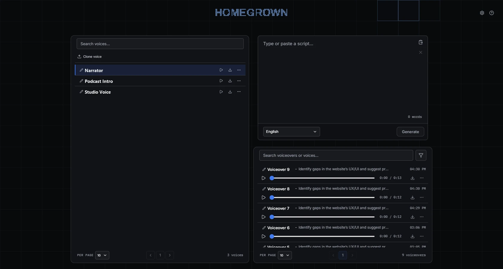
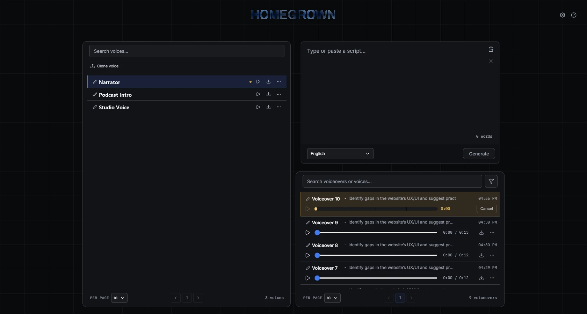
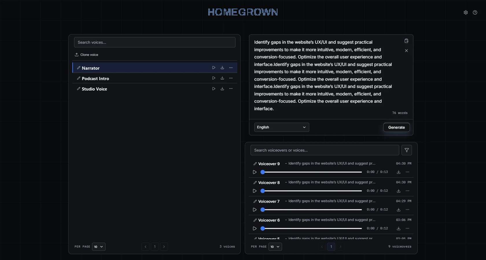

01 / Your voice
Record once
A dry, close-mic reference clip of about 10–20 seconds is a useful starting point. Studio accepts longer uploads and shortens clips over 40 seconds to the first 40 seconds of speech.

Local voice generation for Windows
Homegrown keeps your audio, reusable voices, voiceover history, and model on the computer that runs it. No account. No subscription. No hosted service.
$69 · one-time · lifetime usage
Windows 10/11, 64-bit. The app is unsigned, so Windows may show a SmartScreen warning. Only clone voices you have permission to use.
01 / Reference
A dry, close-mic clip of about 10–20 seconds is a useful starting point.
02 / Script
Select a saved voice and a supported script language, then generate when ready.
03 / Voiceover
Completed voiceovers stay on your machine. Download them directly from their row.
How it works
01 / Your voice
A dry, close-mic reference clip of about 10–20 seconds is a useful starting point. Studio accepts longer uploads and shortens clips over 40 seconds to the first 40 seconds of speech.

02 / Your scripts
Choose a saved voice and a supported script language. Long scripts are split into chunks; Studio reports chunk progress instead of guessing a finish time.
03 / Your machine
Presets and completed voiceovers are stored locally. Use the unauthenticated local API only on a trusted network.
04 / Your history
Completed voiceovers are newest-first. Each has playback, a direct MP3 download, and a delete action.

Guided tour
This is an explanation of Studio’s current screens—not a simulated generator. Use the step buttons or arrow keys to move through it.
VOICES CARD
Choose Clone voice in the Voices card, or drop an audio file directly onto that card. Studio detects the reference language and transcribes it. You can search, select, preview, rename, download the reference, or delete a saved voice later.
Aim for 10–20 seconds; a clean sample helps. There is no upload-language picker.
SCRIPT EDITOR
Enter narration, select one of the languages exposed by the loaded model, and select a saved voice. Generation stays unavailable until all three are ready. A voice can read another supported language, though its original accent may remain.

STARTUP & QUEUE
On first use, the packaged app downloads the model and shows startup progress while it initializes. Clone voice and Generate remain disabled until ready. Jobs run one at a time; additional requests queue, and long scripts report chunk progress.
This card illustrates status; it does not load a model.
VOICEOVERS
Completed voiceovers are newest-first. Search matches saved voice names; filters narrow by voice, duration, status, or date. Each completed voiceover has playback, a direct MP3 download, and a delete action.
Pricing
Pay once for lifetime usage. No subscription, no account, nothing hosted.
Lifetime
$69one-time
lifetime usage
Send us a message and our team will follow up.
23 of 23 features
Choose Clone voice in the Voices card, or drop audio onto it. A 10–20 second clean clip is a useful starting point; clips over 40 seconds are shortened to the first 40 seconds of speech. Studio detects the reference language and transcribes it.
Files queue in the order you chose and clone one at a time. Each shows a status toast: waiting to be cloned, getting cloned, cloned. A failed file is named and does not block the rest.
The Voices card has server-side search and pagination. Click a row to select a voice; rename it with the pencil; preview it, download its reference, or delete it.
The editor has a Paste from clipboard button, a clear button, and a word count. Pasting is clipped to the remaining 60,000-character limit.
Pick the language the script should be read in. A voice can read another supported language, though its original accent may remain. Generate stays unavailable until a script, a voice and a language are all chosen.
Generate becomes available once the script, voice and language are set and the model has finished loading. The shortcut appears in its tooltip.
Long scripts are split into chunks. Studio reports chunk progress rather than guessing how long the whole script will take.
Additional requests join the queue and appear in Voiceovers. Cancel queued jobs there.
Search by voiceover or voice name. Filters narrow by voice, date range, duration, or generation status. Pages are 10, 25, 50, or 100 voiceovers, and your choice is remembered.
Every completed voiceover has playback with a seekable progress bar.
Each completed voiceover has a direct MP3 download.
Reuse in a voiceover’s menu puts its script, voice and language back into the composer.
Rename a voiceover with its pencil. Deleting asks for confirmation, then waits seven seconds with an Undo toast before it is sent.
On first launch with the model ready, Studio offers a tour of Settings, voices, the script editor, Generate, Voiceovers and search. Replay it with the help button.
Settings lets you choose System or a named Studio theme. The choice is stored in your browser.
A draggable, resizable mascot sits in Studio. The Pet animal switch in Settings hides or shows it.
Settings has a Danger Zone to permanently delete all generated voiceovers or all uploaded voices. It needs the admin password configured on your computer and has no Undo.
Homegrown has no hosted service or sign-in. Use the local API only on a trusted network.
The model, reference audio, saved presets, completed history and queue records are stored on the computer running the app.
A self-extracting Windows executable. Allow about 8 GB of free storage; the packaged app downloads its model on first run.
Generation is fastest on an NVIDIA GPU with CUDA drivers. CPU fallback is supported, but generation may take many minutes.
Our team sets the tool up on your computer the first time you use it.
You get free assistance for the first week.
No features match that search.
Contact
Lifetime usage is $69, one time. Message us on WhatsApp or email and we will set it up on your computer. You get free assistance for the first week.
We respond actively within a day or less
Local-first, plainly stated
Homegrown has no hosted service or sign-in. The model, reference audio, saved presets, and completed history stay on the computer running the app. That does not make an exposed API safe: use it only on a trusted network.
Before you buy
NVIDIA with CUDA drivers is recommended. CPU fallback is supported, but generation may take many minutes. The packaged app downloads its model on first run; allow about 8 GB free storage in total.
$69 one-time, lifetime usage. Only clone voices you have permission to use.
$69 one-time · lifetime
Contact us to buy